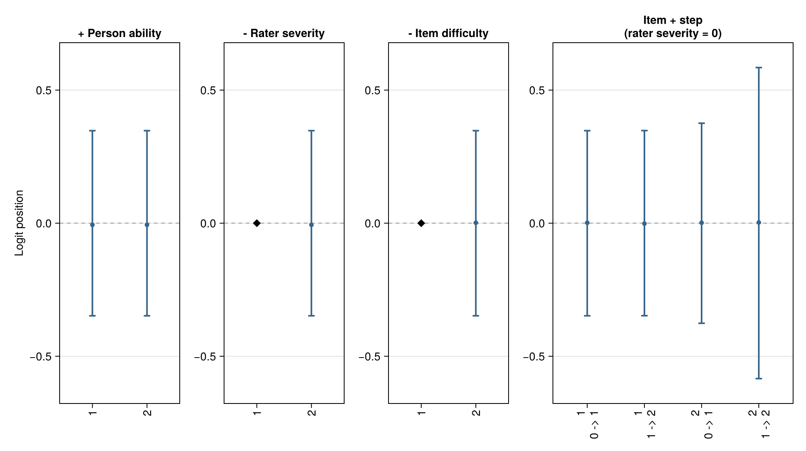
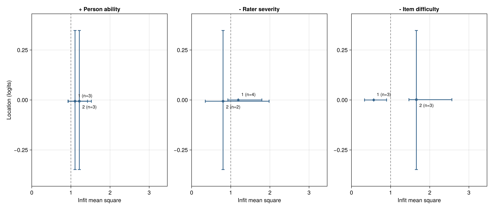
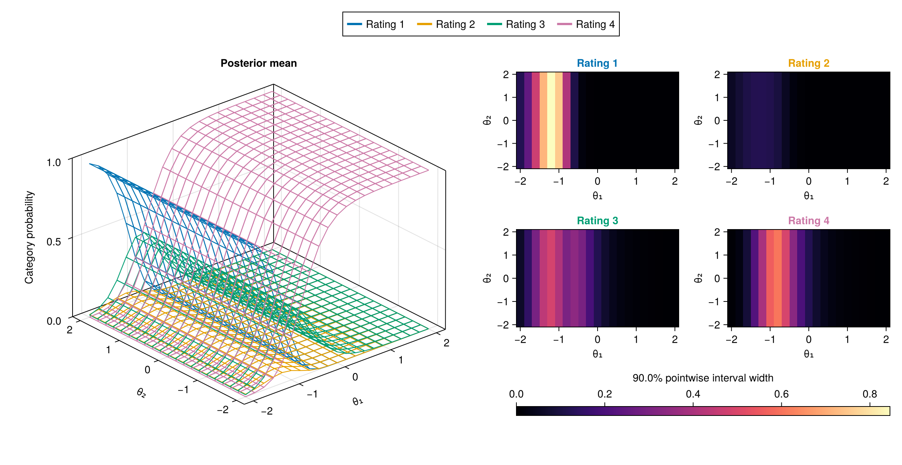

BayesianMGMFRM.jl
This manual includes unreleased interfaces and examples. It is not the documentation of an installed release. Model support and scientific acceptance remain as stated on each page.
When several people rate performances, their scores can reflect ability, task difficulty and rater severity. This package models these influences together and reports uncertainty about their differences.
Start with one question: Is R2 more severe than R1? The first analysis uses supplied artificial ratings, fits a one-dimensional model, explains its numerical checks and answers the question with an uncertainty interval. It saves an answer you can read and a fit you can reopen. You do not need to choose among all the model families to follow this example.
If the terms are new, read Getting Started first. New to Julia? Start with the 5-Minute Julia Guide for R, Python, and FACETS Users. Comparing software? See the comparison table with FACETS, ACER ConQuest, R (TAM/mirt), and brms/CmdStan. For your own study, choose assumptions that match its design; a worked teaching example is not a recommendation to use its sample size or prior everywhere. Install the matching local source below before running this version's example.
Find an answer by task
Start with the question you need to answer; you do not need to know a function name first. The explanation links lead to concepts, then to executable examples and the exact function help.
| Your question | Start here | What you should be able to decide |
|---|---|---|
| I am new to Julia (coming from R, Python, or FACETS). Where do I start? | 5-Minute Julia Guide | Install and activate a project, read :symbol and ; keyword syntax, and run your first script |
How does this package compare with FACETS, ConQuest, R (TAM/mirt), or Stan? | Software comparison table | What is built-in, what is experimental, how uncertainty is quantified, and when to prefer each tool |
| How do I complete my first analysis? | First MFRM analysis | Read the supplied ratings, check the computation, interpret the R2−R1 interval and reopen the answer |
| How do the APIs connect in one analysis? | Connected workflow | Follow data → specification/prior → fit → diagnostics/answer → saved result, and distinguish refitting from postprocessing |
| How do I begin a two-dimensional MGMFRM analysis? | Bundled MGMFRM data | Inspect the fixed ratings, Q matrix and prior; distinguish the four-chain teaching fit from the short interface demonstration |
| How do I use my own ratings file? | Read a CSV and specify Q | Preserve identifiers and category order, resolve missing/coding errors, and map items to dimensions by name |
| What do persons, raters, facets and dimensions mean? | Getting Started, including five or more facets | Which influence each data column represents; whether the model actually estimates it |
| Which MFRM/GMFRM/MGMFRM route fits my question? | Model choices, current support | Dimension, slope and threshold choices; which routes remain experimental |
| How are rating probabilities calculated? | Worked explanation, then model equations | How a parameter change affects a category probability; who owns the thresholds |
| How does estimation work in Julia or Stan? | From model to posterior draws, then sampler controls | Model versus sampler; warmup, chains, uncertainty and numerical warnings |
| How do I choose and check priors? | Prior implications, sensitivity | Whether generated ratings are plausible on the declared scale |
| How do I obtain intervals, diagnostics and useful reports? | Reading Results, manuscript reporting checklist, reporting API | Posterior uncertainty versus MCMC error; what to report in Methods and Results |
| How do I check a three-outcome input or read its saved analysis? | Input inspection, saved results | Two-ordinal + one-binary (9/9/2) rating tables, trial-history covariates, portable JSON reports, MCSE, and comparison warnings |
| How can I compare models or plan a study? | Comparison workflow, recovery precision, operation limits | Aligned prediction targets and explicit recovery MCSE limits; a general design runner remains unavailable |
| How should I allocate ratings before collecting data? | Plan a rating study | Prepare a score-free allocation, bind actual outcomes and retain failed or unfinished datasets |
| Do several criteria assess the same produced response or rating event? | Shared-response joint ratings, Star-factorized mixed-support association | Separate task, response and criterion IDs; choose shared-response, paired uniform, or general D >= 2 mixed-support star association via Experimental.joint_rating_spec |
| Where are help and runnable examples? | Julia help, examples, API by task | Inspect data without fitting first; then run a model-specific example |
| How can I reopen and share results? | Reports and reproducibility | A same-environment fit cache versus a portable computed JSON report |
| My analysis stopped or the output is unclear. Where can I get help? | Troubleshooting and problem reports | Find the recovery step and provide a reproducible report with the right source and environment |
| What changes when I update the package? | Versions and saved results | Preserve the original analysis, distinguish source revisions, and regenerate only the affected output |
Install this development preview
This manual describes a local source checkout. The published successor branch does not contain all of its interfaces. Use a separate analysis project and replace the example path with the location of this checkout:
using Pkg
Pkg.activate("rating-local")
Pkg.develop(path="path/to/BayesianMGMFRM.jl")
using BayesianMGMFRM
pkgdir(BayesianMGMFRM)Turing is an optional backend; add and load it only when selecting backend=:turing, as shown in sampler controls.
Keep the exact source, Project.toml and Manifest.toml. A developed path remains mutable; preserving its manifest alone does not preserve the source. For an existing native cache, restore its original complete environment using the reproduction guide. The declared Julia minimum is 1.10.8. Earlier local sources completed the scalar MFRM and normalized D2 MGMFRM examples, including fitting and restoration, on macOS with that Julia version. JointRatings has separate saved-result checks under Julia 1.12.5/macOS. See the operation-specific compatibility table for the source, startup and platform limits. Installing this checkout is not scientific acceptance or a stable release. The published preview identifies its own matching public source and earlier scope.
Examples ship with the package and can be located independently of your working directory:
using BayesianMGMFRM
include(joinpath(pkgdir(BayesianMGMFRM), "examples", "inspect_ratings.jl"))This first example inspects artificial ratings and constructs a specification; it performs no fitting. Continue with the examples.
Visual Tour: Psychometric Maps and Bayesian Diagnostics
Load CairoMakie and call BayesianMGMFRM.plot(x; kind = ...) to create shared-scale Wright maps, location-by-infit Pathway maps, 3D multidimensional response surfaces, posterior predictive checks, and prior-sensitivity plots. Every figure includes structured methodological notes explaining the scale, identification references, and uncertainty intervals; see the Visualization Gallery for full-resolution figures and reading guides.
Shared-Scale Wright Map (kind = :wright) | Pathway Map (kind = :pathway) | 3D MGMFRM Response Surface (kind = :response_surface) |
|---|---|---|
 |  |  |
Compare person abilities (+), rater severities (-), item difficulties (-), and adjacent-category boundaries on one logit axis (also supports person_display = :histogram and plot_wright(...; kind = :ridge)). | Inspect posterior location alongside infit/outfit mean-square and marginal credible intervals to spot unusual rating patterns. | Visualize how two abilities shift category probabilities (0–1) and pointwise credible-interval widths (layout = :overlay, :panels, or :heatmaps). |
Note: The Wright and Pathway illustrations use deterministic artificial draws to demonstrate the display conventions; the 3D surface reuses 16,000 retained joint draws from a saved experimental fit to simulated ratings. See the Visualization Gallery for all 12 unified plot kinds (:posterior, :diagnostics, :predictive, :wright, :pathway, :response_surface, :prior_sensitivity, :prior_predictive_sensitivity, :design_precision, :rater_drift, :criterion_collapse_classes, and :criterion_collapse_categories).
BayesianMGMFRM.jl provides conservative Bayesian workflows for many-facet Rasch measurement. It combines long-format rating-data validation, identified model construction, Bayesian fitting, diagnostics, predictive checks, portable reports, and optional figures directly from saved or newly fitted models.
New to Many-Facet Models?
Start with the beginner's guide. It follows a concrete rating example and separates the research question, data design and model choice. No Julia or Bayesian modeling experience is needed to read it.
- Getting Started: persons, items, raters, dimensions and the differences between MFRM, GMFRM and MGMFRM.
- How Rating Models Work: category probabilities, a worked calculation, priors, identification and ability correlation.
- Reading Results and Comparing Models: uncertainty, diagnostics, predictive comparison and simulation for study planning.
For executable Julia workflows, continue to the short runnable examples.
What Is Supported
The stable fitting surface covers one-dimensional MFRM with rating-scale or partial-credit steps (including ordinary binary/polytomous 1PL models with rater = nothing). The following additional configurations require explicit experimental opt-in:
- a fixed-coefficient multidimensional MFRM with independent abilities;
- a two-dimensional between-item MFRM with estimated population correlation;
- either admitted multidimensional MFRM route with an explicit exchangeable rater prior and a supplied rater kernel SD;
- a one-dimensional scalar GMFRM with item discrimination and rater consistency;
- a multidimensional fixed-Q confirmatory MGMFRM with independent abilities;
- that independent MGMFRM with an explicitly normalized exchangeable or source prior, matched fixed/free item slopes, or fixed location/step mean profiles;
- an explicit two-dimensional correlated MGMFRM, covering fitting, summaries, diagnostics, MCSE, prior/conditional posterior prediction, manual caches and report/figure bundles;
- a three-dimensional correlated MGMFRM (Correlations among Three Traits) under a pure fixed-Q and normalized exchangeable prior contract (
Experimental.correlated(spec; scales = ...)/Experimental.Correlated3D); - user-named additive scalar facets (User-Named Additive Facets) for additional main-effect facets with explicit step ownership and priors;
- a two-study concurrent three-outcome workflow (Concurrent Three-Outcome Study) with full numerical Gaussian/half-normal/LKJ prior configuration (
Experimental.ThreeIndicator).
For simultaneous multi-criterion ratings of the same produced response or rating event, Experimental.joint_rating_spec(...; association = :none | :uniform | :star) and Experimental.fit connect three bounded experimental routes: Shared-response Joint Ratings (:none), Paired Ordinal Association (:uniform), and Star-Factorized Multi-Criterion Association (:star, supporting general D >= 2 and mixed category scales).
Separate experimental routes jointly fit rater-by-item severity, observed-group rater severity, criterion-collapse mixtures, or temporal rater drift (RW1) in their documented scalar models. These are not fitted by adding bias terms to the common mfrm_spec route, and they preserve their own numerical and scientific boundaries.
Broader discrimination structures, exploratory loadings, and correlation estimation above three dimensions are not supported. See Scope and Releases for the exact boundary and Experimental Models for the provisional API. Before choosing MGMFRM, review what is estimated and what is fixed: its fixed Q pattern still has estimated active loadings, and its rater consistency parameter has a different meaning from reliability. The common-operation table connects each route to fitting, comparison, recovery and reporting, while the scientific-evidence table distinguishes implemented operations from supported inferential claims.
Recommended Path
The sequence below uses the unified practitioner workflow (Layer 1) for stable MFRM entry points. For multidimensional MFRM, GMFRM/MGMFRM, or multi-criterion joint ratings, follow the model-specific fitting and prior routes.
- Build long-format ratings with
FacetData. - Run
design_summaryandvalidate_designto inspect coverage, connectedness, category use, optional groups, and anchors. - Create an
mfrm_specand review itscontract.getdesignandmodel_equationprovide optional parameter and equation inspection. - Use
prior_drawandprior_predictive_checkbefore fitting. - Call
fit(spec; backend = :advancedhmc, ...)with explicit sampling settings for the supported stable model. Barefit(spec)selects random-walk Metropolis and one chain; see how estimation works. - Review
qualifyanddiagnostics(along with detailedsampler_diagnostics,mcmc_diagnostics, andparameter_block_diagnostics). - Inspect
posterior_summary,facet_summary,category_summary,contrast, estimand-specificposterior_mcse,predictive_check,criteria, andprior_sensitivity. Generate figures viaBayesianMGMFRM.plot(fit; kind = :posterior)or the specific helpers in the plotting guide. - Persist or reopen results with
save_fit/load_fitandsave_report/load_report, or exportfit_report(fit; view = :public),fit_report_public, andfit_report_markdown. Check report completeness withfit_report_healthor setrequire_complete = true.
Documentation
- Data Validation explains the input contract and design checks.
- Model Equations records the mathematical and source contracts.
- Bayesian Workflow presents the analysis sequence and interpretation checks.
- Bayesian Fitting covers backends, experimental restrictions, diagnostics, and reports.
- Experimental Models documents the provisional namespace and its stability boundary.
- Examples points to runnable scripts.
- Migrating from FACETS and ACER ConQuest maps the overlapping RSM/PCM models, sign and identification conventions, estimator differences, and supported individual hard anchors.
- Scope and Releases states supported and unsupported surfaces.
- Development Roadmap separates available capabilities, evidence gaps and the order for comparisons and extensions.
- API lists the public functions by workflow layer.
- Getting Started with Many-Facet Measurement
- Start with a concrete question
- Facets, levels and dimensions are different
- Understand one row of data
- Choose a reference or fix an external calibration
- Choose assumptions before choosing a model name
- Check what this package can currently fit
- Follow one complete analysis path
- New to Julia? A 5-Minute Guide for R, Python, and FACETS Users
- Check your understanding
- How Rating Models Work
- From adjacent categories to probabilities
- Work through a three-category example
- What GMFRM and MGMFRM change
- Compensatory and non-compensatory response rules
- Within-item and between-item multidimensionality
- Why origins, units and priors matter
- What Bayesian estimation computes
- How correlation and LKJ fit into the model
- Reading Results and Comparing Models
- Separate three kinds of uncertainty
- Which conclusion does a rater analysis support?
- Checklist for reporting in a manuscript
- Choose 90%, 95% or 99% credible intervals
- Is a highest-density interval available?
- Interpret a contrast, not overlapping marginal intervals
- Ask what a predictive check actually checks
- Compare models against the same prediction task
- Use simulations to plan informative studies
- Write an answer that matches the evidence
- Bias, reliability and a complete MFRM report
- Posterior classification and conditional ability precision
- Posterior ranks within an explicit cohort
- Jointly fitted group differences in severity
- Long-Format Data and Pre-Fit Validation
- Model Equations
- Bayesian Workflow
- Bayesian Fitting
- Running chains concurrently
- Sampling progress
- From a rating model to posterior draws
- Supported MFRM/RSM/PCM Fit
- Posterior interval figures
- 3D item response surfaces for MGMFRM
- Titles and notes outside the image
- Chain diagnostic figures
- Posterior predictive figures
- Wright map
- Pathway map
- Fixed coordinates and anchors
- Backends and Sampler Controls
- Experimental Generalized Fitting
- Predictive Checks and Model Comparison
- Reports and Reproducibility
- Reports with figures
- FACETS-Compatible Descriptive Rows
- Interpretation Boundary
- Fit a no-state three-outcome model
- Experimental Models
- Boundary
- Matched fixed and estimated item slopes
- Fixed location and step mean profiles
- Settings and help
- Fixed-coefficient multidimensional MFRM
- Correlated ability dimensions
- Dimension aggregation and item structure
- Workflow
- Sampling coordinates for independent MGMFRM
- Location diagnostics for fixed-Q MGMFRM
- Correlated MGMFRM: explicit fitting and saved results
- Two-dimensional correlation density
- Stability and evidence limits
- API reference
- Correlations among three traits
- Examples
- Ordinary binary IRT without raters
- First MFRM analysis
- Observed-score ICC without fitting
- Observed-score alpha without fitting
- Inspect Data Without Fitting
- Minimal MFRM Workflow
- Synthetic paired-criterion ratings
- Fixed-coefficient multidimensional MFRM
- Guarded Scalar GMFRM Workflow
- Guarded Fixed-Q MGMFRM Workflow
- Explicit normalized-prior MGMFRM workflow
- Correlated MGMFRM Workflow
- Saved Generalized Fits and Figures
- Common saved-fit prediction preview
- Reliability from a Saved Fit
- Common-response score agreement from a saved fit
- Category use and conditional curves from a saved fit
- Integrated saved-fit report
- Matched one- and multidimensional MGMFRM
- Numerical precision of saved K-fold comparisons
- Classification from a saved fit
- Ranking uncertainty from a saved fit
- Matched item-slope workflow
- Mean-profile prior example
- Review saved temporal severity
- Read a saved three-outcome report
- Prepare a three-outcome fit
- Observed-group rater effects
- Migrating from FACETS and ACER ConQuest
- At-a-glance comparison with related rating software
- Two different comparison questions
- When fitted category counts agree by construction
- Source features worth preserving
- Identify the overlapping model first
- Executable minimal migration
- Offline bridge for a licensed execution host
- Comparing fit and decisions
- Parameter and output crosswalk
- Important non-equivalences
- Unsupported source features must fail visibly
- Anchor-constrained refitting policy
- Migration acceptance checklist
- Scope and Releases
- API
- Data and Design API
- Fitting and Artifact API
- Workflow and Diagnostics API
- Validation and Evidence API